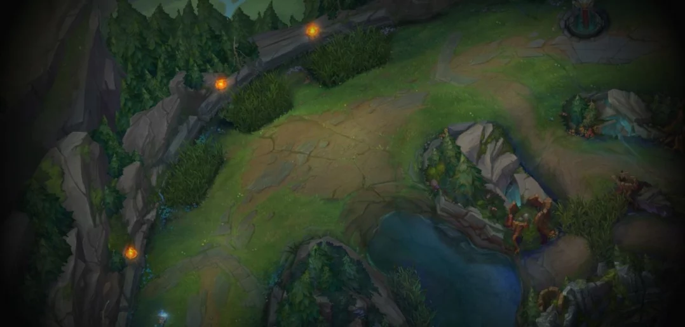
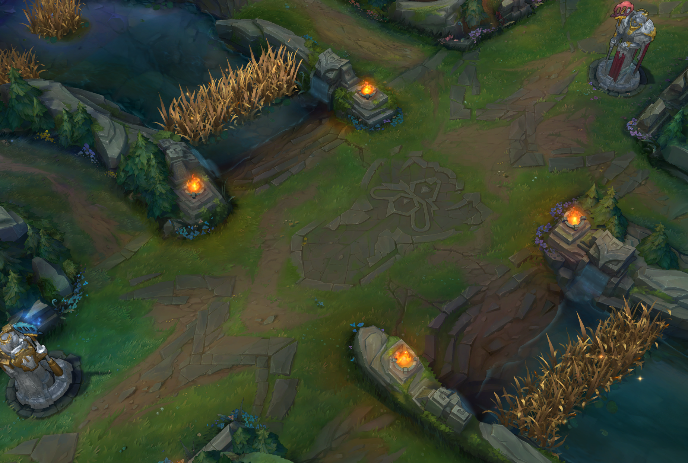
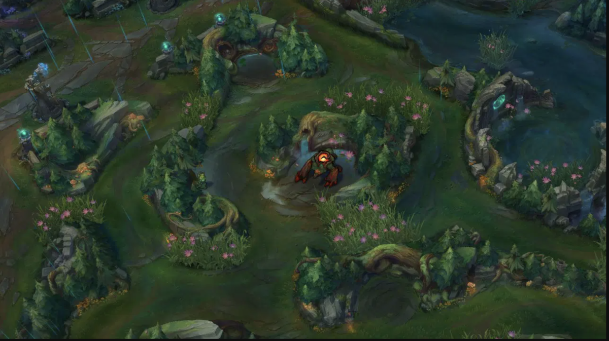

Your Role on the Rift!
{kind=link}
The purpose of this site is to help new players choose one of the five roles/lanes to specialize in
for the Summoners Rift. The five roles from the top of the map to the bottom are as follows:
Top Laner
Jungler
Mid Laner
Bottom/Bot Laner
Support
Below you'll find brief descriptions for each role. Links to pages that offer more depth
are located at the top and bottom of the page.
The purpose of this site is to help new players choose one of the five roles/lanes to specialize in
for the Summoners Rift. The five roles from the top of the map to the bottom are as follows:
Top Laner
Jungler
Mid Laner
Bottom/Bot Laner
Support
Below you'll find brief descriptions for each role. Links to pages that offer more depth
are located at the top and bottom of the page.
Lane Roles
Top Lane
Essentially an island, your jungler wont help often if at all and your success comes down to a 1 vs 1. You start to have a presence during team-fights after the laning phase.
Mid Lane
Another 1 vs 1 lane like the top lane. You'll get assistance from your jungler and support but are also expected to roam as needed and provide assistance during objective fights.
Bot Lane
The bot lane a 2 vs 2 lane between the bot laner often known as the ADC and the support. You will generally be the main carry and your lane will have a lot of stake on objective fights.

Roam Roles
Jungler
The jungler is the player focused on clearing monster camps and teaming up with laners to help them beat their opposition. They also take objectives like the rift herald and drake.
Support
The support role, also played in the bot lane, is a role focused on supporting and assisting the laner. You will also roam the map to get vision and assist as needed.